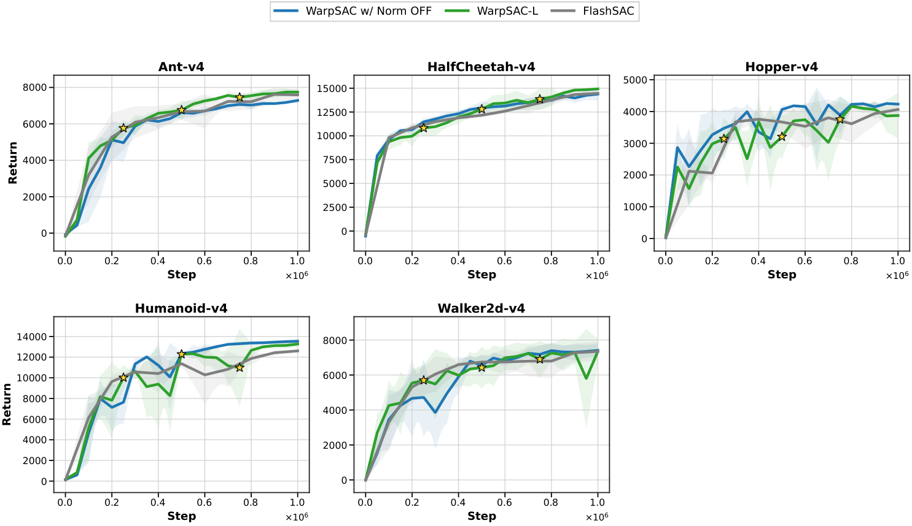
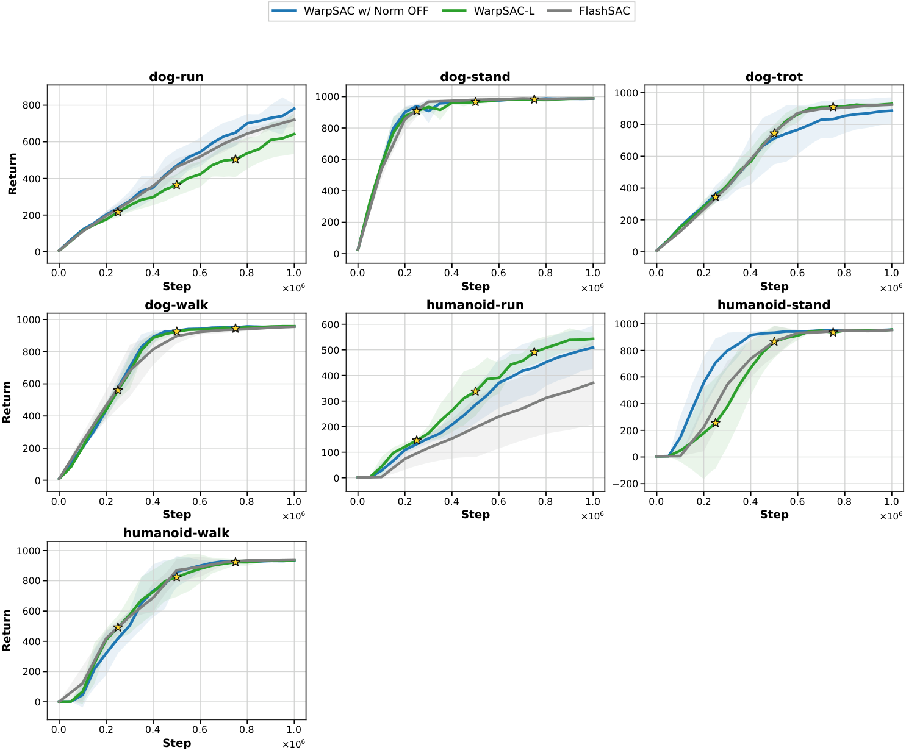
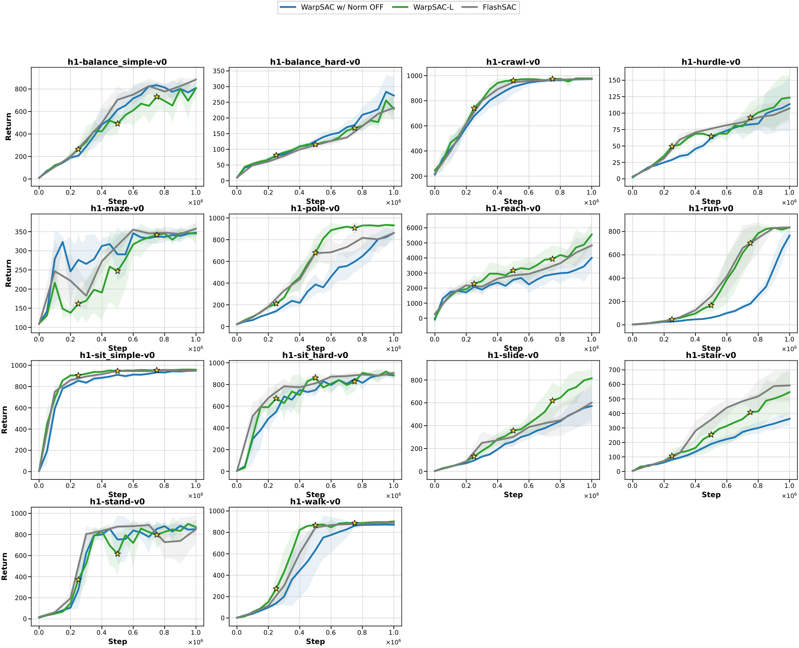
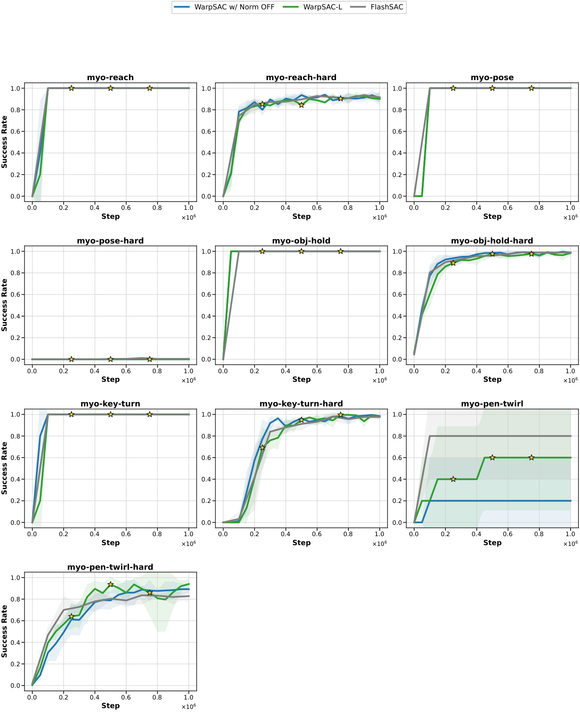
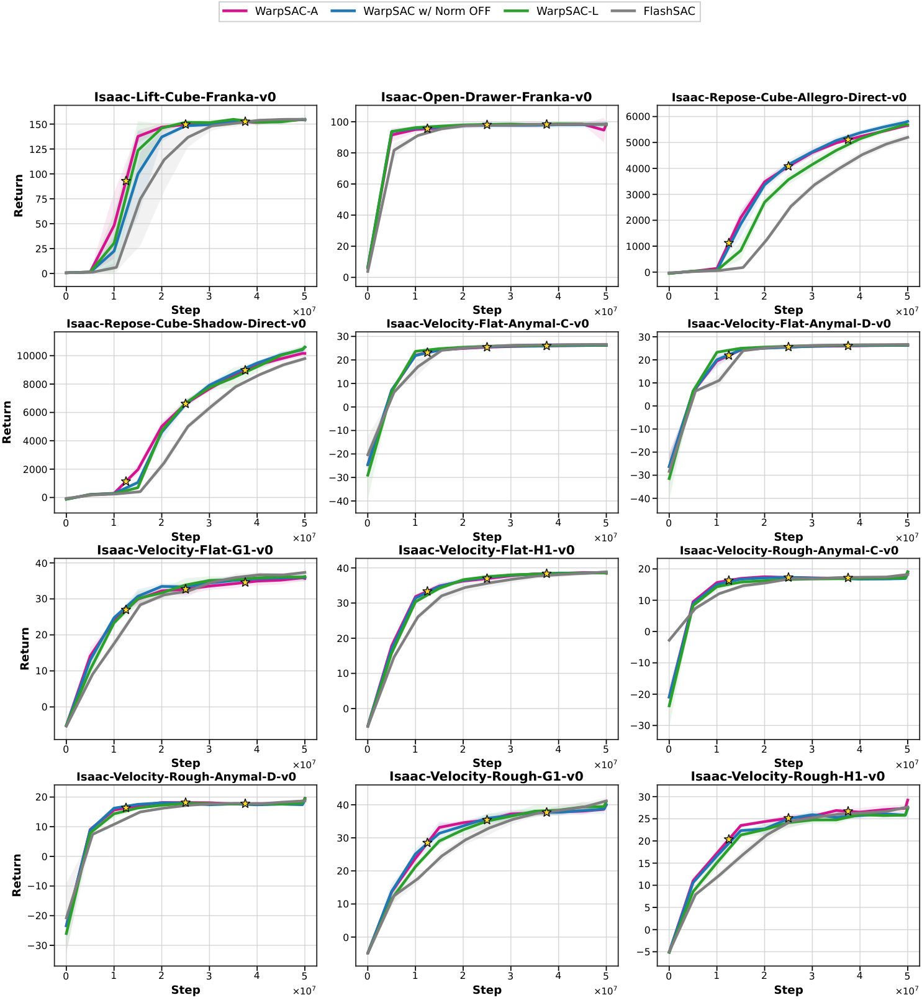
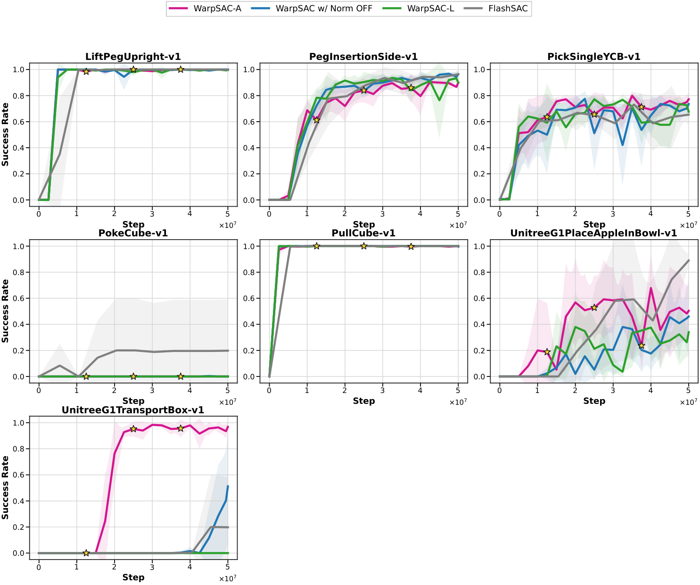
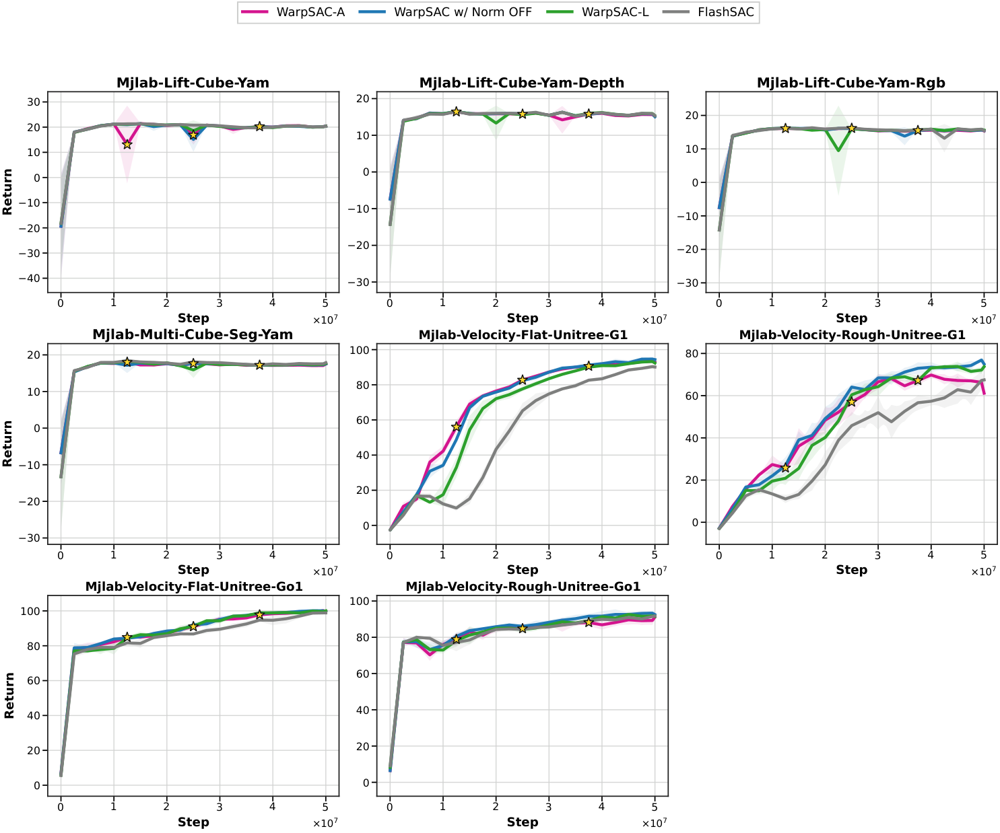
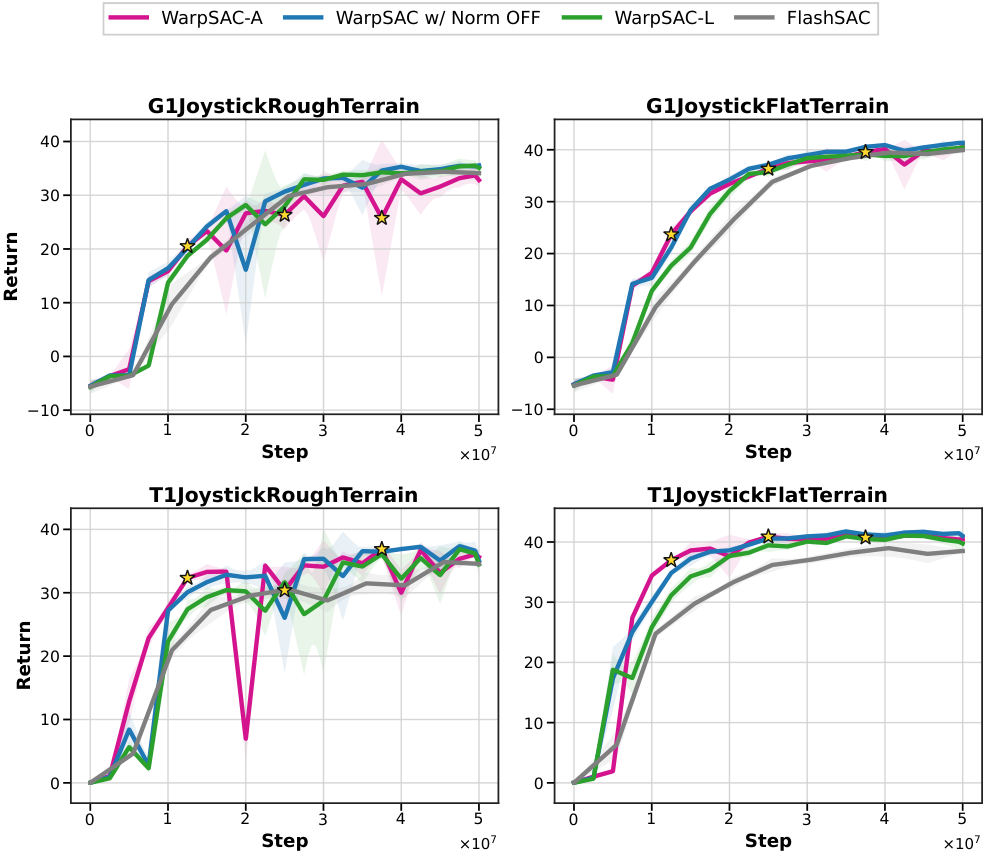

WarpSAC in action
Scalable learning for challenging control regimes.
WarpSAC extends FlashSAC with regime-aware replay and stabilization choices, improving sample efficiency and training wall-clock efficiency in the evaluated settings.
Overview
Abstract
WarpSAC is an off-policy reinforcement-learning framework designed for both CPU-scale and GPU-parallel simulation. It provides JAX and PyTorch backends and supports continuous-control environments spanning MuJoCo, IsaacLab, MJLab, ManiSkill, and related benchmark suites.
Our implementation focuses on the interaction between exploration, replay prioritization, parameter normalization, and scalable updates. The same training interface can be used for standard simulator benchmarks and the Unitree G1 sim-to-real locomotion setup.
Method
One interface, multiple regimes.
WarpSAC automatically resolves defaults from the environment type. The main controls are the decay-based replay schedule, actor and critic parameter normalization, and the compute/replay device configuration.
Experiments
Sample efficiency and training wall time.
On the Unitree G1 Flat task, the paired curves report sample efficiency and training wall-clock time for WarpSAC, FlashSAC, and PPO.

CPU-scale environments




GPU-parallel environments




Reproducibility
Run the sim-to-real configuration.
CUDA_VISIBLE_DEVICES=0 python train_warpsac.py \
--env-id Unitree-G1-Flat \
--env-type mjlab \
--backend jax \
--seed 1Reference
Citation
Use the following entry when citing the project. Update the author and venue fields when the paper metadata is final.
@article{warpsac,
title = {WarpSAC: Towards the Pinnacle of Scalable Off-Policy Reinforcement Learning},
author = {Tang, Hongyao and collaborators},
year = {2026}
}